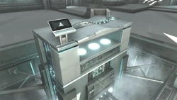

Animus
Animus (plural: Animi) este o mașină de realitate virtuală dezvoltată și comercializată în cele din urmă de Abstergo Industries. Permite utilizatorului să citească memoria genetică a unui subiect și să proiecteze ieșirea pe un ecran extern în trei dimensiuni. Mașina a fost utilizată în special în proiectul Animus al firmei Abstergo și în programul Animi Training. Primul a analizat amintirile genetice ale mai multor subiecți selectați, de obicei pentru a obține informații despre Ordinul asasinilor sau Piese din Eden, în timp ce a fost folosit pentru instruirea angajaților Abstergo.
Un model mai nou de Animus, cunoscut sub numele de Animus Omega, a fost distribuit comercial de Abstergo ca o consolă de divertisment. Acesta era compatibil cu jocurile video constând din amintiri înregistrate și era destinat să fie folosit pentru a influența publicul larg în numele Templierilor.
Animus a fost creat de Abstergo Industries doar în a doua jumătate a secolului XX, bazându-l pe tehnologia descoperită anterior de Primele Civilizații. Deși cel puțin parțial influențată de descoperirea memoriei genetice, arhitectura software utilizată de Animus nu s-a bazat pe aceasta. Autoritatea principală, Dr. Warren Vidic, în ceea ce privește memoria genetică a ghidat dezvoltarea mașinii și astfel a devenit supraveghetorul Proiectului Animus. În timp ce lucra la Moscova în 1977, William Miles a furat o copie a unui plan Animus timpuriu, dar a fost urmărit de Templieri. Întâlnindu-l pe colega asasin Medeya Voronina în grădina zoologică din oraș, William i-a dat desenele înainte de a evada, spunându-i să construiască Animus înainte ca Templierii să poată și să-l țină la curent cu progresul. Femeia, care era un om de știință asasin în Protvino din apropiere, a reușit în cele din urmă să construiască propria mașină din acele planuri.
Cea mai timpurie utilizare cunoscută a unui Animus a fost în 1980, când Dr. Vidic și-a început experimentele cu un bărbat necunoscut sub numele de cod Subiect 1. Abstergo a reușit în cele din urmă să extragă amintirile genetice ale lui Aveline de Grandpré. Din păcate, Animus a fost extrem de instabil, determinând subiectul să intre într-o criză fatală. Pentru a evita astfel de lucruri, Vidic a interceptat birourile și laboratoarele colegei sale Aileen Bock, folosind inițiativa ei pentru a-și continua propriile cercetări. Până în 1983, Vidic a dezvoltat o versiune mai stabilă a Animus și a folosit-o pentru a manipula memoria genetică a Subiectului 4 al Proiectului Animus, care a fost supranumit Daniel Cross. De atunci, mașina a trecut prin mai multe modificări majore din punct de vedere cosmetic și tehnic, dar chiar și până în 2012, Abstergo nu reușise încă să o perfecționeze.
Abia spre finalul anului 2018 au fost aduse niște modificări importante, astfel evitând rănirea subiecților. Totuși , o expunere prea lungă poate produce daune cerebrale subiectului.
Toate acestea din cauza luptei Asasinilor si cavalerilor Templieri pentru liberul arbitru al oamenilor.